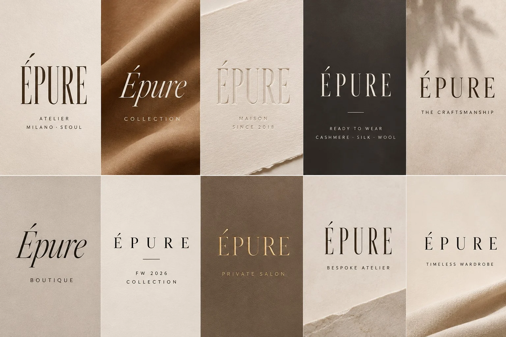

MAISON ÉPURE · PARIS / CONCEPT
Une certaine
idée de l’élégance.
파리의 예술과 건축, 날카롭지만 부드러운 테일러링에서 영감을 받은 가상의 프렌치 럭셔리 메종.
DÉCOUVRIR LA COLLECTION ↗
01 / NOTRE SIGNATURE
ÉPURE COLLECTION.
시그니처 로고는 고전적인 프렌치 세리프와 유려한 곡선이 만나는 형태로 완성했습니다. 선택된 원본 이미지를 공식 브랜드 기준으로 사용합니다.
02 / UNIVERS VISUEL
La matière. La lumière. Le silence.
종이의 결, 캐시미어의 표면, 절제된 활자와 빛. 브랜드 무드보드 원본을 디자인 문법의 기준으로 보존합니다.


03 / LE SAVOIR-FAIREL’essentiel,
L’essentiel,
toujours.
지나치게 꾸미지 않은 선, 정확한 비례, 손끝에서 완성되는 디테일. 소재와 피팅의 차이를 경험하는 에디토리얼 아카이브.
EXPLORER LES MATIÈRES ↗